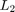

LPVBALANCMR - Balanced truncation of quadratically stable pss models
Contents
Syntax
[PRED,INFO] = lpvbalancmr(SYS,N) [PRED,INFO] = lpvbalancmr(SYS,N,OPTION1,VAL1,OPTION2,VAL2,...)
Description
[PRED,INFO] = lpvbalancmr(SYS,N) performs balanced truncation model reduction on a PSS SYS. A pss SYS, with Nx states, is balanced by computing a single balancing transformation for SYS and applying it at every point in its domain. The output PRED has N states and is obtained by truncating from the balanced system the (Nx-N) states which contribute least to its input-output mapping. INFO contains two fields 'StabSV' and 'ErrorBound'. INFO.StabSV is a vector of singular values describing the input-output mapping of SYSB (comparable to Hankel singular values for LTI systems). INFO.ErrorBound contains the  norm of the difference between SYS and PRED: INFO.ErrorBound = induced norm of SYS - PRED.
Note that lpvbalancmr only works for quadratically stable systems. For unstable pss models use lpvncfmr.
[PRED,INFO] = lpvbalancmr(SYS,N,OPTION1,VAL1,OPTION2,VAL2,...) provides additional options for the balanced truncation model reduction. The current implementation supports the following options:
| OPTION | VAL | Explanation |
| 'weight' | {Wout,Win} | LTI weights on input (Win) and output (Wout). Used to emphasize accuracy in different I/O and frequency ranges. Must be invertable if method 'invgram' is used. |
| 'method' | 'gram' or 'invgram' | Solve using either gramians or the inverse gramians. |